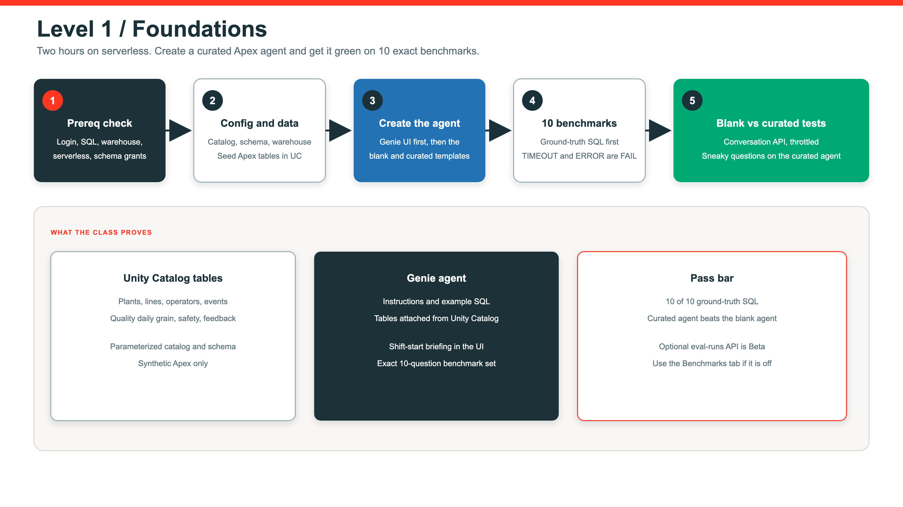

Level 1 · 2 hours · Apex Precision Manufacturing
A standalone lab for analysts, BI leads, and first-time Genie authors. Apex is fictional. The governance pattern is real.
What you leave with
Prereq check
Seed seven tables
Create the agent in the UI
Curate instructions
Run 10 benchmarks
Blank vs curated
Shift-start briefing
Governed model
Six sites. No live plant feed.
Equipment grain for OEE later.
Shift-start briefing unit.
Production identity.
FPY and scrap facts.
Availability inputs.
Component catalog.
You own catalog, schema, and warehouse widgets. Do not commit them.
Create then curate

Instruction craft
Name plants, lines, FPY, scrap, and shifts the way the tables are named. Do not invent synonyms.
State the grain in one sentence. Wrong grain is a fail even if the number looks close.
Paste a working query for the hard join. Genie copies patterns better than prose.
level-1-foundations/FACILITATOR_GUIDE.md.Benchmarks
Run the certified query first.
Same question, natural language.
Exact match. Close is still FAIL.
Patch instructions, not the question.
Prove curation
Same tables. No instructions. Expect wrong grain, skipped filters, and polite guesses.
Terminology, joins, and example SQL. Same 10 questions should now pass.
“How are we doing today?” must ask for plant or shift, not invent a KPI.
HR or finance questions stay unanswered. No hallucinated tables.
Percent vs ratio vs count. Units in the instruction save the answer.
Close the lab
Which plant missed FPY last shift?
Where did downtime concentrate?
Which line should the supervisor walk first?
What is still out of scope for this agent?